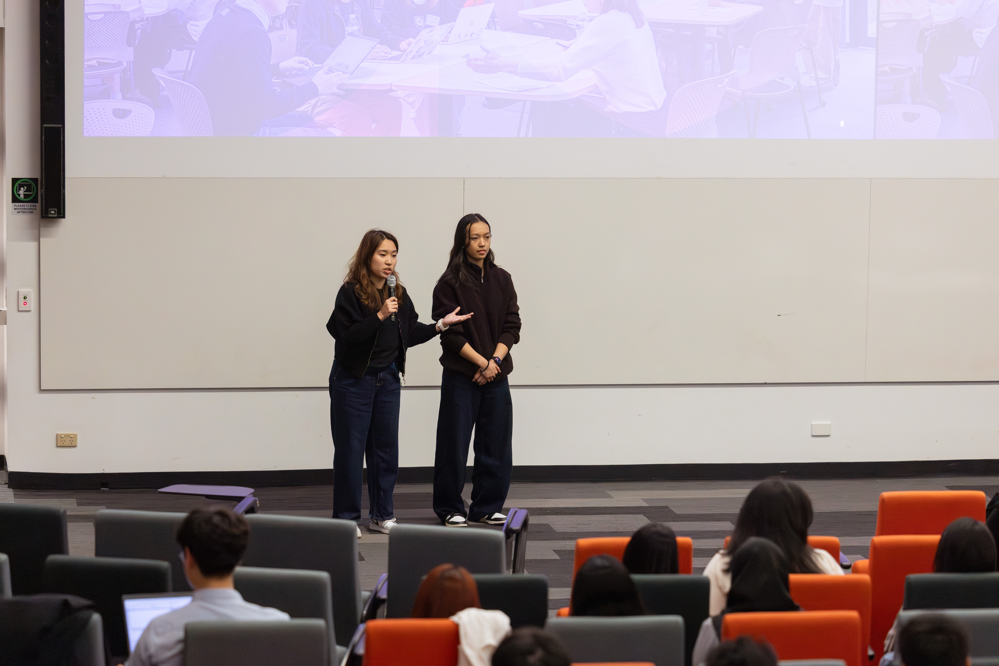
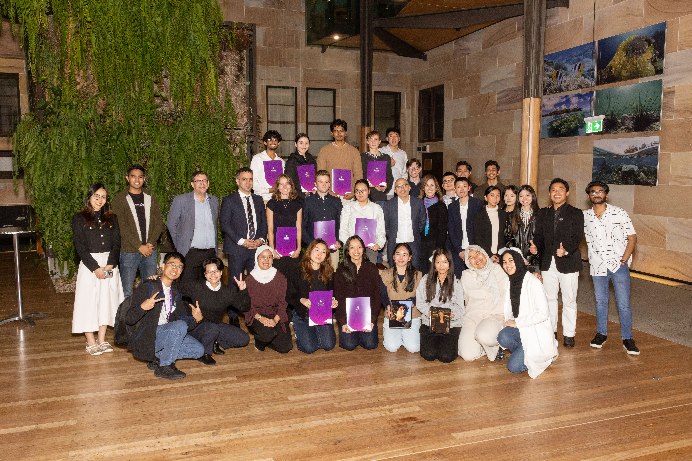
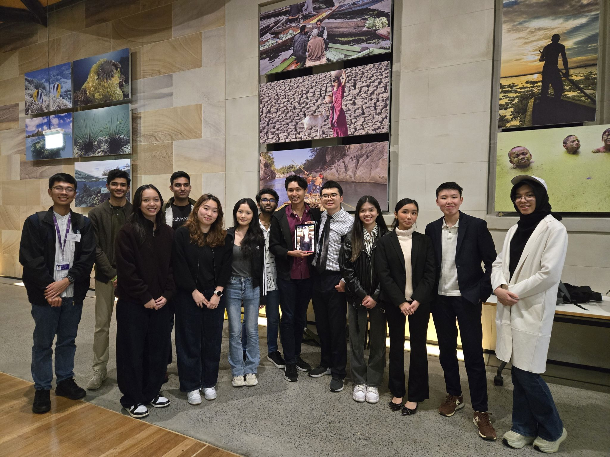

A one-line summary of what you built and why.



What the project is, the problem it solves, and what inspired it.
Explain the approach, including any maths or algorithms behind it.
Challenges, mistakes and what you'd do differently next time.